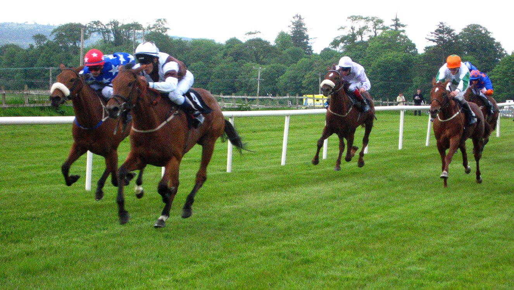

El Dewhurst de Newmarket pone a prueba la apuesta de Aidan O'Brien por Darkness Falls
Aidan O'Brien llegó a mencionar la Triple Corona al hablar de Darkness Falls. El sábado, en el Darley Dewhurst Stakes de Newmarket, se verá si aquel comentario tenía fundamento.

La frase quedó grabada en un vídeo de balance del Irish Champions Festival, difundido en los canales de Coolmore en redes sociales: «Darkness Falls podría ser nuestro primer caballo de Triple Corona desde Camelot».
O'Brien no se quedó ahí. «Parece tener capacidad para aguantar la distancia y tiene esa velocidad», añadió. Sobre el siguiente paso dudaba entre dos opciones: «¿Vamos al Dewhurst o al Futurity Trophy? Es posible que vaya al Dewhurst, podría tener el ritmo para ello». También lo describió así: «Es poco común, tiene una cabeza estupenda, se desplaza muy bien en carrera y acelera. Veremos cómo está, pero evidentemente es muy ilusionante».
La elección ha recaído en el Dewhurst. En Newmarket se comprobará si aquellas palabras eran un comentario de paso o el primer indicio de una de las historias del galope de 2027.
La reunión de este sábado se conoce como Future Champions Festival, pero también se juega algo inmediato: el título de campeón de los dos años sigue abierto.
O'Brien tiene ya medio título en la mano con Sun Goddess. La potranca ha ganado seis de sus ocho carreras esta temporada. Sus actuaciones en el Moyglare Stud y en los Cheveley Park Stakes la sitúan entre lo mejor de su generación, con una valoración Timeform de 120. Y todavía no ha terminado su campaña.
El preparador irlandés afronta así la cita de Newmarket con dos frentes. Con Sun Goddess, el presente de la temporada de los dos años. Con Darkness Falls, la pregunta sobre la próxima, que empieza a responderse en el Dewhurst.
Por Martín Larrañeta